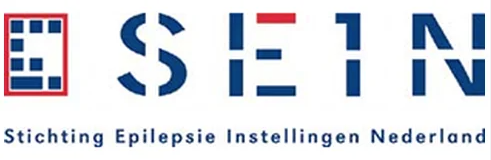

Dataplatform · zorg & onderzoek
Een open-source datastack voor zorgonderzoek
SEIN, expertisecentrum voor epilepsie en slaapgeneeskunde, wilde een moderne, open-source datastack: een pipeline die zorgdata van A tot Z verwerkt, van binnenhalen tot inzicht, transparant en zonder afhankelijkheid van een leverancier.
Wij bouwen deze stack op uit bewezen open source componenten: dlt haalt automatisch en stapsgewijs data op, dbt zet ruwe data om in geteste, gedocumenteerde tabellen, Dagster orkestreert en bewaakt de hele keten, en DuckDB vormt de razendsnelle rekenmotor, lokaal én in productie. Door te modelleren volgens het OMOP Common Data Model wordt samenwerken met onderzoekers en het delen van code eenvoudiger en consistenter.
dlt
dbt
Dagster
DuckDB
OMOP